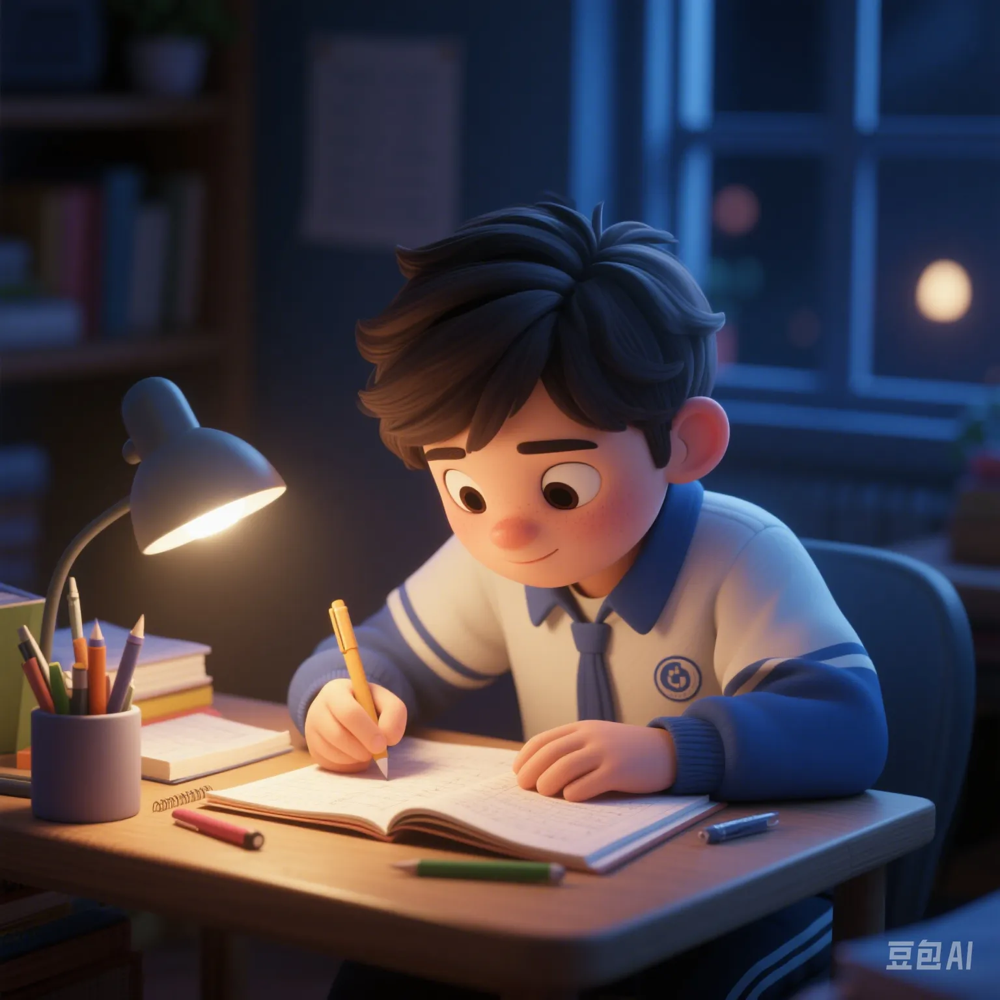

One - Hour Daily Exercise vs. Staying Up Late to Study: How to Solve the Health Dilemma of Chinese Teenagers?
PeaceLove.Top Insights :2025-04-17
The real - world challenges of teenagers' health dilemma 🏃♂️📚
In recent years, the health problems of Chinese teenagers have attracted more and more social attention. According to the latest survey data, the obesity rate among teenagers is rising year by year, and the myopia rate has also reached a new high. Behind all this, it is closely related to the academic pressure and the change of lifestyle of the younger generation. From middle school to university, more and more teenagers choose to sacrifice their rest time, and staying up late to study has become the norm. The academic pressure almost makes them out of breath 💨. Meanwhile, the time for physical exercise has been sharply reduced. Exercising for one hour every day, which should be the basic requirement for maintaining health, has become a 'luxury' for more and more students. For them, how to balance study and health has become a major problem 🤔.
Staying up late to study: The cost of academic pressure 🛏️📖
- Heavy pressure from homework and exams: The academic competition in China is extremely fierce, especially the college entrance examination, which almost determines the future of each student. Therefore, many parents and teachers prioritize academics, resulting in the almost complete compression of students' extracurricular activities and even the sacrifice of basic rest time. In this situation, many teenagers still study for a long time at night, and staying up late to study has become a common phenomenon 👨🏫. However, staying up late for a long time not only affects the quality of sleep but also leads to physical and mental problems such as a weakened immune system, anxiety, and depression.
- Hidden spread of health damage: Staying up late not only affects the brain's learning ability but also increases the physical burden on students. Long - term lack of sleep leads to metabolic disorders and a low immune system, which in turn causes obesity, skin problems, etc. More seriously, these health problems may start to accumulate quietly during adolescence and may affect health in adulthood in the long run ⚠️.
One - hour daily exercise: A necessary choice for health 🏋️♀️
- Close connection between exercise and physical and mental health: Compared with academic pressure, exercise is crucial for teenagers' physical and mental health. Scientific research shows that proper exercise can significantly improve cardiovascular health, bone density, and the immune system. It also helps relieve stress and improve sleep quality 🛌. Adolescence is a critical stage for physical development and psychological maturity. Regular physical exercise can enhance teenagers' self - management ability for the future and their ability to cope with stress 🌟.
- Physical activities boost intellectual development: Exercise not only contributes to physical health but also plays a positive role in brain development and learning ability. Studies have found that teenagers who exercise regularly have better concentration, learning efficiency, and memory. Especially when doing aerobic exercises such as running, swimming, and basketball, it can effectively promote blood circulation in the cerebral cortex and improve thinking ability 🧠. Therefore, exercise and study are not in opposition but promote each other.
How to balance academics and health: The roles of parents and schools 🏠🏫
- Proper guidance from parents: Parents play a crucial role in the healthy development of teenagers. In order to cope with the fierce academic competition, parents often also put a lot of pressure on their children. However, it is equally important to support and care about their children's physical and mental health. Parents should help their children find a balance between health and study through scientific work - rest arrangements. For example, reasonably plan the work - rest time, try to prevent children from immersing in study for a long time, and appropriately increase the exercise time to ensure the healthy growth of children both physically and mentally 🍎.
- Health education in schools: In addition to parents, the role of schools in this regard cannot be ignored. Schools can guide students to participate in extracurricular activities, arrange at least one hour of physical exercise every day, or organize some group sports events to stimulate students' interest in sports. In addition, schools should also regularly organize health lectures to explain the impact of staying up late and exercise on health, so that students can better realize the importance of physical and mental balance 👟.
Support from the government and society: Promote national health 🏛️
- Promotion of fitness policies: In recent years, the government and all sectors of society have begun to pay more attention to the health problems of teenagers and have introduced some positive policies, such as strengthening the construction of sports facilities and improving extracurricular sports activities. The implementation of these policies can provide more exercise opportunities for teenagers and also help relieve the academic burden on parents and students. Through policy guidance, we can create a healthier and more balanced growth environment to help teenagers develop healthily and avoid the 'accumulation' of health problems.
- National fitness campaign: With the promotion of the national fitness policy, more and more cities provide free sports facilities and activities for citizens, and teenagers can more easily access various sports projects. Through the national fitness campaign, not only can the participation rate of teenagers in sports be increased, but it also helps to form a social emphasis on physical health, so that each student can have more opportunities to exercise 💪.
Conclusion: Break the health dilemma and embrace a better future 🌟
The health problems of teenagers have become the focus of social attention. Solving this problem is not only the responsibility of parents and schools but also requires the joint efforts of the whole society. By balancing academic pressure and physical exercise, teenagers can maintain physical and mental health during their fulfilling study career, which can lay a solid foundation for their future ✨.